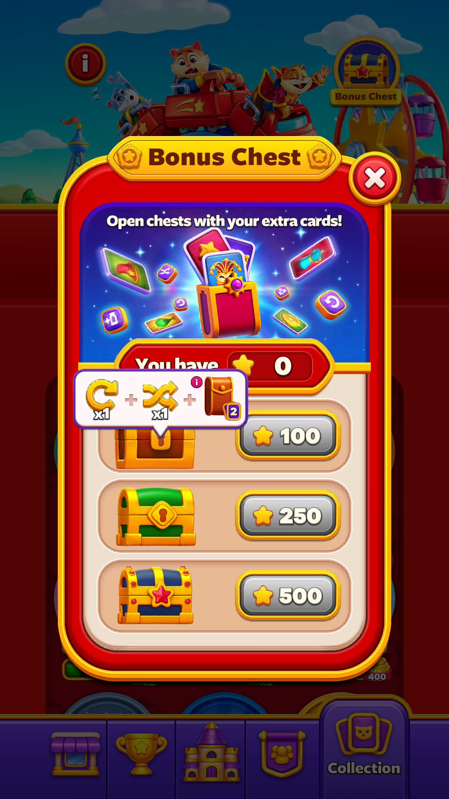
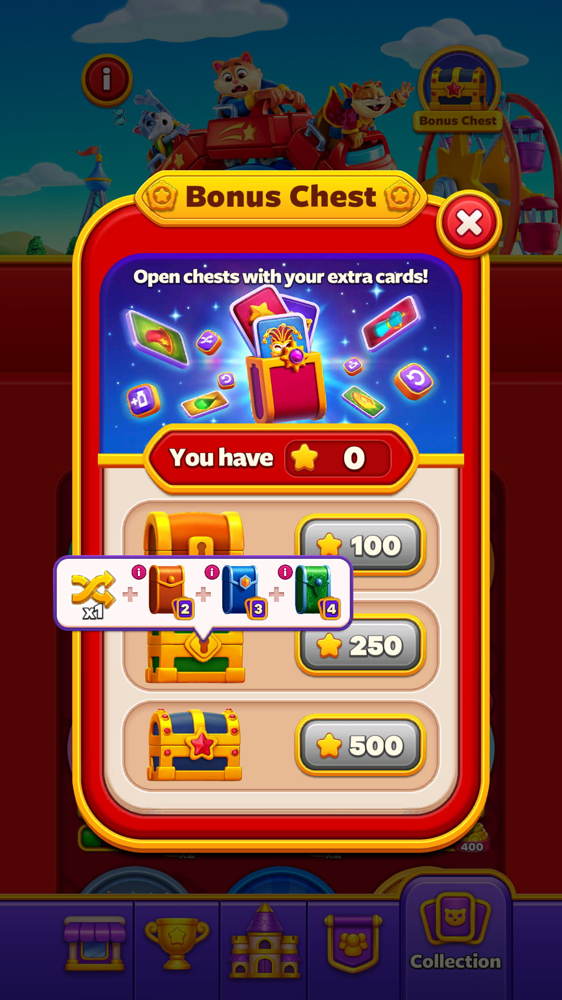
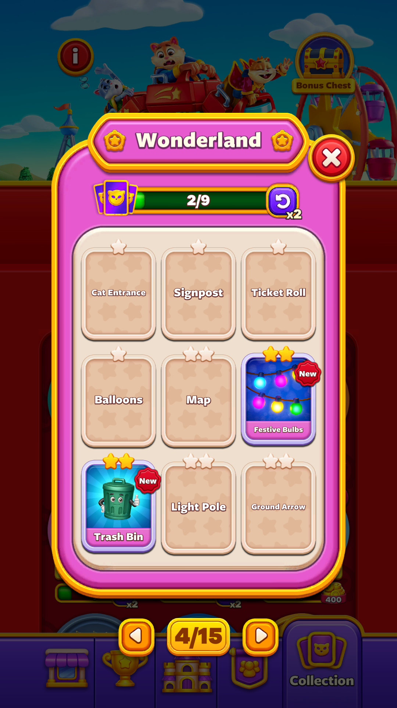
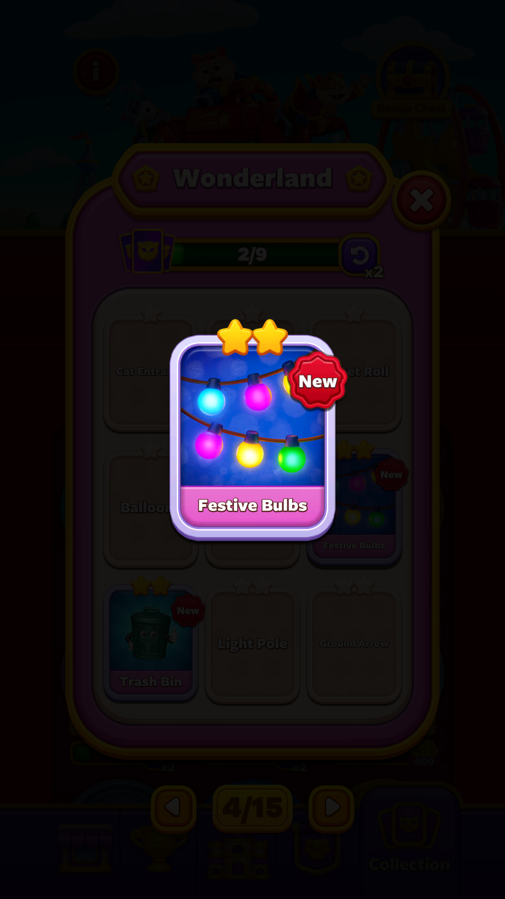
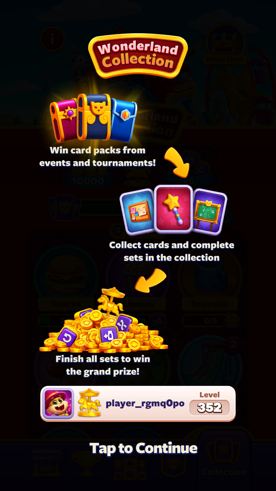
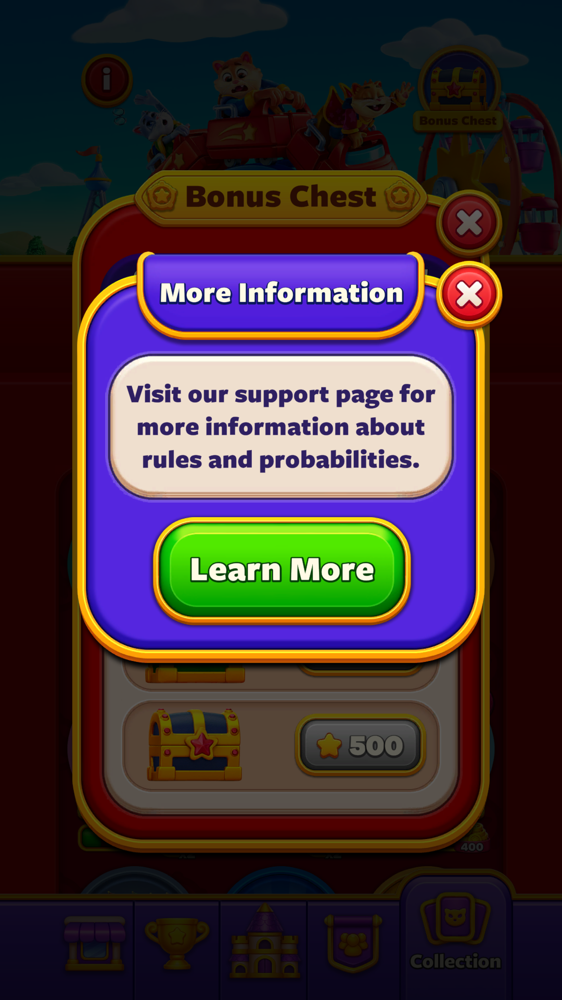
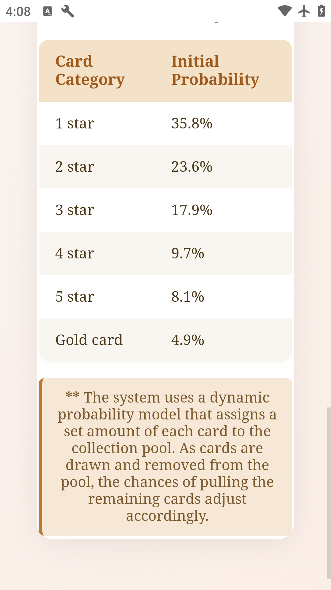

MagicSort — runtime continuation 20261116_round2
5 case, 32 ảnh mới trên3feature. Đây là subset actual được root review, không phải full UC pass. Snapshot43case/15/11, lượt16/11 ban đầu0runtime và workbook15/11 được giữ riêng.
Full cases · 58 actionability · Data index
MS-R16B-HOME01 — Vuốt thật qua Home, Leaderboard và Shop; kiểm biên trái
HomeUI · observed_partial · build0.0.3129 ARM64 · offline_existing_fixture
Precondition: Build3129 xác minh hash APK; Home352, offline_existing_fixture, không popup chặn.
Steps: Vuốt từ (180,1000) tới (900,1000),650ms: Home sang Leaderboard. → Lặp lại: Leaderboard sang Shop. → Tại Shop, vuốt cùng hướng lần nữa để kiểm biên. → Vuốt ngược từ (900,1000) tới (180,1000),650ms hai lần: Shop qua Leaderboard về Home.
Expected: Trang và tab được chọn đồng bộ theo chiều kéo; không đi ra ngoài đầu danh sách; không bắt đầu level hoặc chi tiền.
Actual: Quan sát đủ Home → Leaderboard → Shop; kéo vượt đầu Shop vẫn ở Shop. Hai vuốt ngược trở về Home. Level352, coin và booster không đổi.
Limits: Chỉ ba trang và các drag650ms được quan sát. Không đo threshold0.2, tween timing, preload, nhánh Journey hoặc snapback drag ngắn.
Per-UC scope: {"UC-02":{"coverage":"observed_branch","scope":"Long swipe hai chiều và biên tại Store; không phải mọi gesture/variant."}}
Ledger: {"currency_amount_delta_by_raw_type":{},"currency_amounts_unchanged":true,"life_fill_date_changed":false,"limitless_currency_dates_changed":false,"player_after":{"isLevelInProgress":false,"level":352},"player_before":{"isLevelInProgress":false,"level":352},"scope":"Amount equality is not whole-inventory equality; timed/life fields and other event models are separate. Raw currency IDs are not assigned names from a different build.","timed_currency_dates_changed":false}


MS-R16B-STORE01 — Quét toàn bộ catalog Shop: 6 bundle và 6 gói coin, giá VND
Store · observed_partial · build0.0.3129 ARM64 · offline_existing_fixture
Precondition: Shop mở qua vuốt; không có checkout; mode offline_existing_fixture.
Steps: Đọc Starter và Apprentice ở đầu Shop. → Vuốt dọc lần lượt để thấy Magician, Sorcerer, Mage, Wizard. → Tiếp tục tới 6 gói coin rồi vuốt thêm để xác nhận cuối danh sách. → Thử chạm icon Undo của Starter; không thấy tooltip mở.
Expected: Catalog hiển thị đủ card, nhãn giá và phần thưởng; scroll tới cuối mà không mua hàng.
Actual: 6 bundle và6 gói coin được ghi nguyên theo UI trong store_catalog_observed.json. Giá VND vẫn hiển thị trong mode offline. Icon Undo được chạm không tạo overlay quan sát được. Cuối danh sách là hàng25k/50k/100k coin; vuốt thêm không lộ card khác. Số dư không đổi.
Limits: Chỉ catalog được cache/hiển thị ở tài khoản này; chưa kiểm receipt, store price refresh, checkout, grant hoặc quyền No Ads. Nhãn ADS không chứng minh entitlement sau mua. Không coi icon không mở tooltip là lỗi nếu chưa có requirement.
Per-UC scope: {"UC-02":{"coverage":"observed_branch","scope":"Duyệt12card tại một catalog offline; không phải IAP grant."}}
Ledger: {"currency_amount_delta_by_raw_type":{},"currency_amounts_unchanged":true,"life_fill_date_changed":false,"limitless_currency_dates_changed":false,"player_after":{"isLevelInProgress":false,"level":352},"player_before":{"isLevelInProgress":false,"level":352},"scope":"Amount equality is not whole-inventory equality; timed/life fields and other event models are separate. Raw currency IDs are not assigned names from a different build.","timed_currency_dates_changed":false}


MS-R16B-COLLECTION01 — Bonus Chest: preview ba rương, đóng tooltip và chạm giá100 khi có0 sao
Collection · observed_partial · build0.0.3129 ARM64 · offline_existing_fixture
Precondition: Build0.0.3129 ARM64 đã được root xác minh hash APK; fixture hiện có ở Home352, Collection8/135. Gameplay UID được cô lập mạng theo session; root thực hiện thao tác, tác giả case chỉ đọc ảnh và safe ledger.
Steps: Mở Bonus Chest; đọc0 sao và ba mức giá100/250/500. → Chạm rương vàng để xem tooltip. Sau khi trở về từ support, chạm rương xanh lá và xanh dương để xem hai tooltip còn lại. → Chạm ngoài tooltip: tooltip mất, Bonus Chest vẫn mở. → Chạm nút giá100 khi You have0; chụp lại sau thao tác.
Expected: Có thể xem preview; thiếu sao không mở rương hoặc trao thưởng; chạm ngoài chỉ đóng tooltip.
Actual: Ba tooltip hiển thị phần thưởng và gói thẻ: vàng có hai booster icon×1 và gói nâu huy hiệu2; xanh lá có icon  Shuffle×1 cùng gói nâu2/xanh dương3/xanh lá4; xanh dương có icon +chai×1 cùng gói xanh lá4/hồng5/navy New. Chạm ngoài làm tooltip mất. Sau khi root chạm100, popup vẫn0 sao và ba nút100/250/500 màu xám; không thấy animation mở/grant hoặc thông báo mới. InventoryModel trong safe ledger018→032 không đổi.
Shuffle×1 cùng gói nâu2/xanh dương3/xanh lá4; xanh dương có icon +chai×1 cùng gói xanh lá4/hồng5/navy New. Chạm ngoài làm tooltip mất. Sau khi root chạm100, popup vẫn0 sao và ba nút100/250/500 màu xám; không thấy animation mở/grant hoặc thông báo mới. InventoryModel trong safe ledger018→032 không đổi.
Limits: Chỉ nhánh thiếu sao và reward preview. Chưa có sao dư để kiểm spend, mở rương, grant, analytics hoặc RNG. Không suy màu/nhãn gói thành effective pack enum; preview không phải thưởng đã nhận. Lượt browser/support xen giữa thuộc case riêng; ledger endpoints không phải atomic transaction.
Per-UC scope: {"UC-06":{"coverage":"observed_branch","scope":"Preview ba rương, outside-dismiss và insufficient-stars0<100 không mở rương; chưa kiểm spend/grant hoặc mở thành công."}}
Ledger: {"currency_amount_delta_by_raw_type":{},"currency_amounts_unchanged":true,"life_fill_date_changed":false,"limitless_currency_dates_changed":false,"player_after":{"isLevelInProgress":false,"level":352},"player_before":{"isLevelInProgress":false,"level":352},"scope":"Amount equality is not whole-inventory equality; timed/life fields and other event models are separate. Raw currency IDs are not assigned names from a different build.","timed_currency_dates_changed":false}







MS-R16B-COLLECTION02 — Wonderland: badge2 và New mất sau khi xem theme rồi đóng/mở lại
Collection · observed_partial · build0.0.3129 ARM64 · offline_existing_fixture
Precondition: Build0.0.3129 ARM64 đã được root xác minh hash APK; fixture hiện có ở Home352, Collection8/135. Gameplay UID được cô lập mạng theo session; root thực hiện thao tác, tác giả case chỉ đọc ảnh và safe ledger.
Steps: Ở Collection8/135, Wonderland2/9 có badge2. → Mở Wonderland: Festive Bulbs và Trash Bin đều2★, có nhãn New; theme2/9. → Chạm Festive Bulbs để xem card phóng to; chạm ngoài rồi chạm Cat Entrance chưa có để xem placeholder. → Chạm ngoài và đóng theme để trở về Collection. → Mở lại Wonderland trong cùng phiên; chưa restart app.
Expected: Sau xemtheme rồiđóng/mởlại, badgeNew đãxem biếnmất; sốthẻ/progresskhôngtăngvìkhôngmởpack.
Actual: Đầu lượt, Collection8/135 và Wonderland2/9 có badge2. Ảnh033 có New trên Festive Bulbs/Trash Bin. 034 phóng to Festive Bulbs vẫn có New tại thời điểm đó;035 là placeholder Cat Entrance. 036 trở về Collection vẫn8/135, Wonderland2/9 nhưng badge2 của Wonderland đã mất; Garden/Water Play vẫn có badge2. 037 mở lại Wonderland: cả Festive Bulbs/Trash Bin không còn New, theme vẫn2/9. InventoryModel trong safe ledger015→037 không đổi.
Limits: Chỉ quan sát UI qua đóng/mở popup trong cùng process. Chưa restart/resync, chưa trích CardInventory.IsNewCard, chưa kiểm analytics phát ra. Ảnh không phân định chính xác mark-seen xảy ra lúc entry, close hay callback. UC16 sync/restart chỉ liên quan, chưa được kiểm.
Per-UC scope: {"UC-12":{"coverage":"observed_branch","scope":"Badge2 và hai nhãn New của Wonderland mất qua đóng/mở lại trong cùng phiên; progress không đổi. Chưa restart, backend hoặc analytics."}}
Ledger: {"currency_amount_delta_by_raw_type":{},"currency_amounts_unchanged":true,"life_fill_date_changed":false,"limitless_currency_dates_changed":false,"player_after":{"isLevelInProgress":false,"level":352},"player_before":{"isLevelInProgress":false,"level":352},"scope":"Amount equality is not whole-inventory equality; timed/life fields and other event models are separate. Raw currency IDs are not assigned names from a different build.","timed_currency_dates_changed":false}







MS-R16B-COLLECTION03 — Collection help và Learn More mở support chính thức trong Chrome rồi quay lại game
Collection · observed_partial · build0.0.3129 ARM64 · offline_existing_fixture
Precondition: Build0.0.3129 ARM64 đã được root xác minh hash APK; fixture hiện có ở Home352, Collection8/135. Gameplay UID được cô lập mạng theo session; root thực hiện thao tác, tác giả case chỉ đọc ảnh và safe ledger.
Steps: Mở Collection info: đọc help ba bước và Tap to Continue; đóng help. → Trong Bonus Chest, từ preview chạm(i): More Information mời đọc rules/probabilities tại support page. → Bấm Learn More: Chrome mở trang Collection tại magic-sort-collection.grandgamesbe.com. Root cuộn qua Card Packs, bảng Initial Probability và ghi chú dynamic pool. → Dùng Android Back: quay lại game với popup Bonus Chest vẫn0 sao.
Expected: Đường dẫn trợ giúp mở trang support và có thể quay lại game. Đọc quy tắc công bố không được tính là mở pack hoặc kiểm RNG.
Actual: Help017 hiển thị ba bước kiếm pack/tích thẻ/hoàn thành set. More Information020 có Learn More;022 Chrome hiện Collection/Card Packs;023–027 hiện năm loại pack, bảng initial probability và ghi chú dynamic pool. Source fetch độc lập xác nhận đích HTTPS https://magic-sort-collection.grandgamesbe.com/ trả200. Android Back028 trở lại Bonus Chest0 sao; không thấy mở pack.
Limits: Đây là case quan sát informational navigation, uc=[] vì GDD không có UC help riêng; các pack UC chỉ related. Quy tắc và xác suất là published_official_rules, không phải empirical RNG, current effective config hay A/B assignment. Browser có mạng không chứng minh gameplay UID truy cập backend. Loại transient016/021 và splash001/002 khỏi curated images.
Per-UC scope: {}
Ledger: {"currency_amount_delta_by_raw_type":{},"currency_amounts_unchanged":true,"life_fill_date_changed":false,"limitless_currency_dates_changed":false,"player_after":{"isLevelInProgress":false,"level":352},"player_before":{"isLevelInProgress":false,"level":352},"scope":"Amount equality is not whole-inventory equality; timed/life fields and other event models are separate. Raw currency IDs are not assigned names from a different build.","timed_currency_dates_changed":false}






